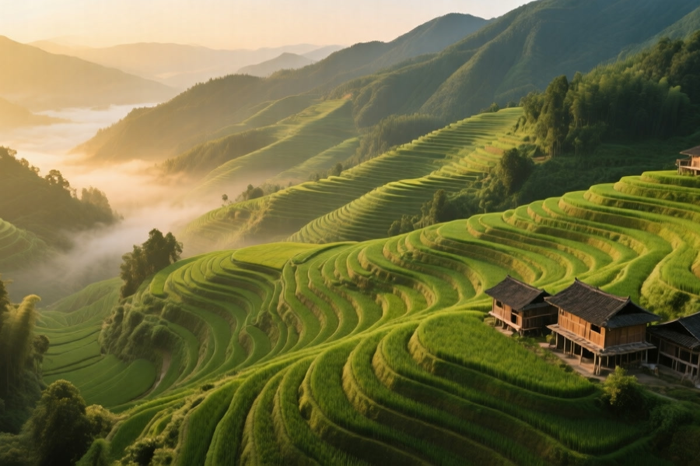

Longji-Rice-Terraces
龙胜 · 龙脊梯田
Last updated: August 2026

There are landscapes you photograph, and there are landscapes people carved by hand for six and a half centuries. The Longji Rice Terraces in Longsheng County, Guangxi Zhuang Autonomous Region, are the second kind: rice paddies built in steps from the valley floor almost to the ridgeline, one terrace above another, so many that they read like the mountain grew a set of rings. It's an agricultural project that outlasted the dynasties that started it, and it's still working.
What "650 Years of Terraces" Actually Means on the Ground
The terraces were first carved in the Yuan dynasty, around 650 years ago, by Zhuang and Yao villagers who turned steep hillsides into farmland by hand. The result isn't a single neat stair — the paddies curve, stack, and scale the slope in a pattern that looks almost organic until you realize nothing about it is accidental. Every step had to catch water and hold soil, for centuries, so the village could keep eating.
The numbers are worth keeping straight because they're the honest version of the claim:
- Height: the highest terraces reach about 1,100 meters above sea level, climbing a long way up the hillside.
- Scale: well over a thousand individual steps across the best-known sections — plenty, without needing me to oversell it as the planet's biggest (that title is contested among several sites, Yangshuo-adjacent and Yunnan's Yuanyang included).
- Who built it: Zhuang and Yao communities over generations — it's a working cultural landscape, not a park built for visitors.
First-Person Notes From the Climb
The terraces are organized around a few villages — Ping'an and Dazhai (Jinkeng) are the main access points — and the real experience is the climb, not a single viewpoint. I started from one of the villages on a clear morning and followed the paths that cut up between the terraces. There's no steep engineering to it; the paths are the farmer's own walking routes, and you gain height gradually with the paddies stepping down beside you.
The water was the thing I wasn't ready for. In the right season each terrace holds a band of water, so the whole mountainside turns into a sequence of shallow mirrors reflecting the sky — step after step of blue and green. Higher up, the contour lines get softer, the view opens over the valley, and you can trace how far the farming climbs: all the way to the tree line, where the terraces just stop because the mountain got too steep to carve.
- Ping'an vs. Jinkeng: both are terrace villages; Jinkeng (Dazhai) has the bigger, more open panoramas, Ping'an is more compact and easier for a short visit.
- Pace it: the climbs are gentle but long — give yourself a few hours and stop at the ridgetop viewpoints rather than rushing.
- The working part: you'll pass farmers working fields and drying grain; it's a live village, not a diorama.
The Season Question, Settled
People ask when to go, and the honest answer is there are two distinct looks:
- May (irrigation): the paddies are flooded and filled with water — this is the "mirror" season, when the whole slope reflects sky and light. The classic photo look.
- September to October (golden): the rice ripens and the terraces turn bright gold across the hillside — a completely different, warmer version of the same view.
Both are strong. Which one you prefer is a taste call; May gives the reflective geometry, autumn gives the color. If you want the famous flooded-stairs image, aim for the May irrigation window; if you want warmth and harvest, come in the fall.
How to Work It Into the Trip
- From Guilin: Longsheng County is a few hours north of Guilin by bus or car; most people do it as a 1–2 night stop.
- Overnight in the village: the terraces really come alive at sunrise and sunset when the light rakes across the steps — staying in Ping'an or Jinkeng means catching those without the day-trip crowd.
- Walk, don't just photograph: the best views need the climb, which is also the point — you're inside the thing you came to see.
A Few Practical Things
- Getting there: buses run from Guilin to Longsheng and the terrace villages; a hired car or driver gives flexibility for the winding mountain road.
- What to bring: decent walking shoes for the paths, water, and layers — the elevation and hills mean it's cooler than Guilin city.
- When to go: target the May flood window or Sep–Oct golden season for the signature looks; shoulder days are quieter.
- Address note: written as Guangxi Zhuang Autonomous Region, per the Guangxi series.
Bottom Line
The Longji Rice Terraces are a 650-year staircase a whole community built up the mountain by hand — thousands of working paddies that turn into mirrors in May and gold in autumn. It's more than a viewpoint; you climb it, you walk through a village that still farms it, and you see why an agricultural project this old, still running, beats a lot of purpose-built attractions. Go for the flooded season or the golden one, stay a night, and take the paths.
Produced by Deep in China — Go deeper than any tourist ever goes.